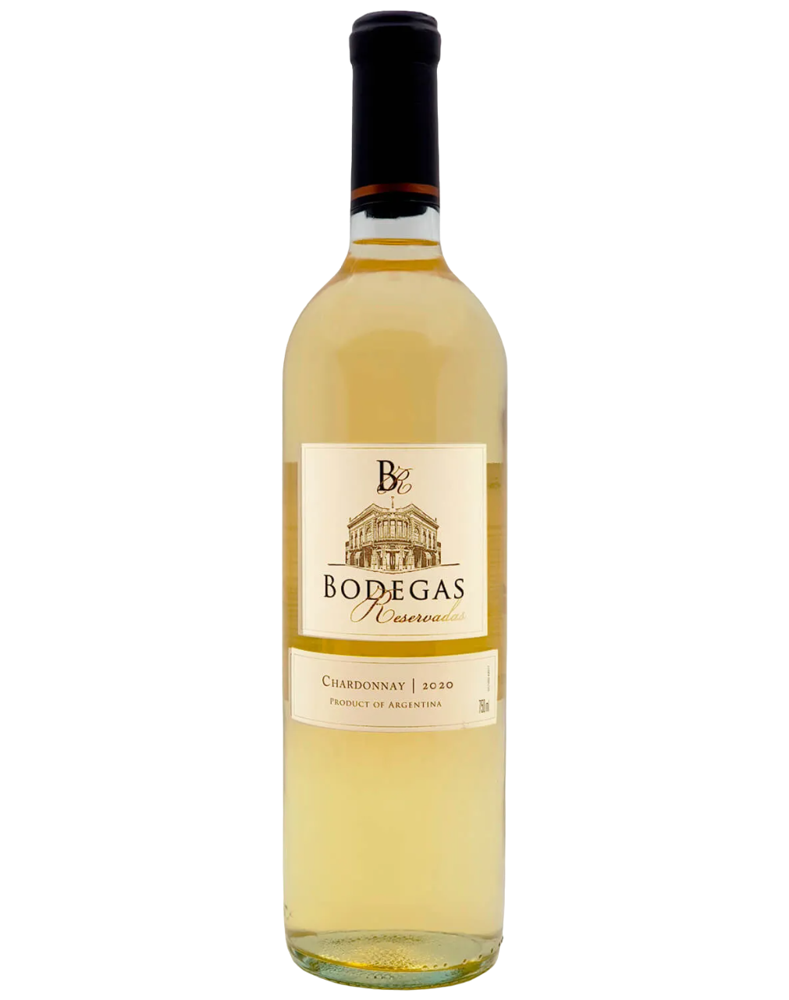
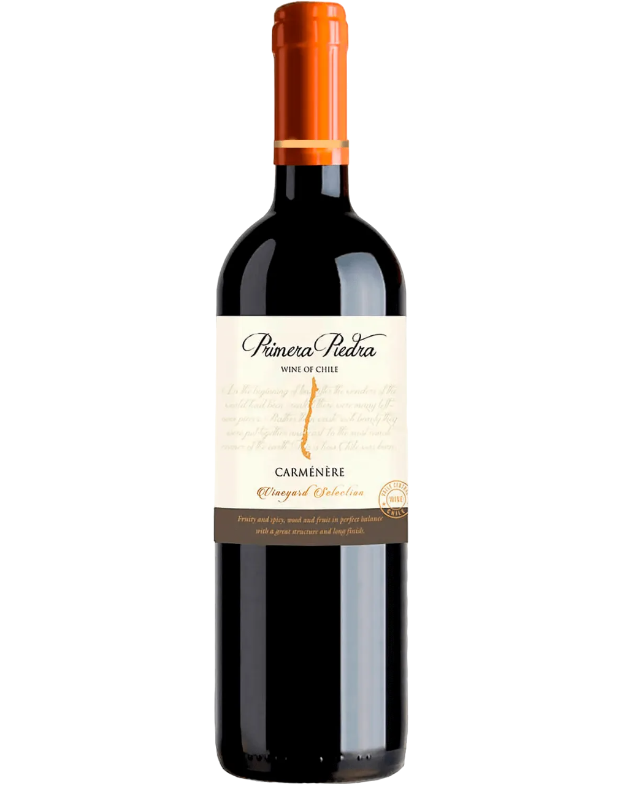
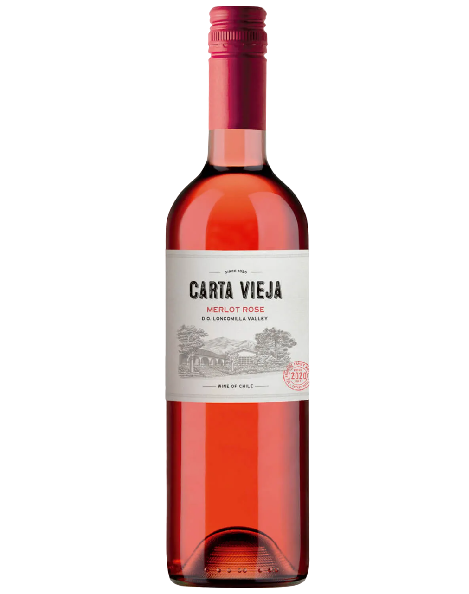
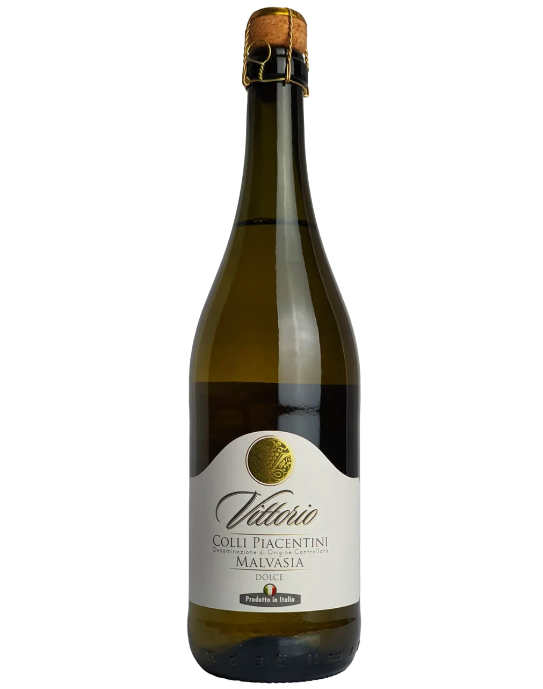

Países Kit e cestas Mercearia Quem somos

Vinho branco
Vinho branco geralmente apresenta sabores de frutas brancas ou cítricas, como maçã, pera, limão e grapefruit. Vinhos brancos mais encorpados podem ter sabores de abacaxi, pêssego e melão. A acidez é um fator importante que afeta o sabor do vinho branco.

Vinho tinto
Vinho tinto geralmente apresenta sabores de frutas escuras, como amora, cereja e ameixa, além de notas de especiarias, como pimenta e cravo. Vinhos tintos mais encorpados podem ter sabores mais complexos de couro, tabaco e chocolate. A acidez e os taninos são fatores importantes que afetam o sabor do vinho tinto.

Vinho rosé
Vinho rosé geralmente apresenta sabores de frutas vermelhas, como morango, framboesa e cereja. Vinhos rosés mais encorpados podem ter sabores de frutas escuras, como amora e ameixa. A acidez é um fator importante que afeta o sabor do vinho rosé.

Vinho frisante
Vinho frisante geralmente apresenta sabores de frutas frescas e vibrantes, como maçã verde, pera e limão. A efervescência do vinho frisante pode afetar a percepção do sabor, tornando-o mais refrescante e borbulhante.